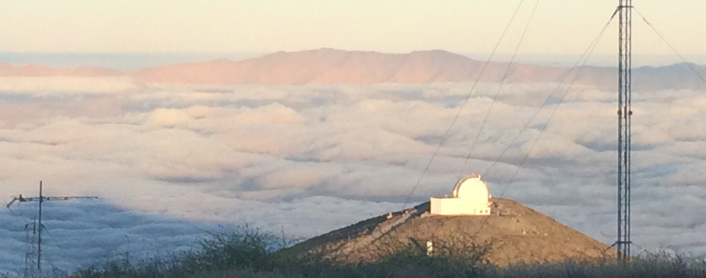

Bandon Decker, PhD
I am a recent graduate of the University of Missouri—Kansas City with a PhD in astronomy. My thesis work focussed on studying high-redshift galaxy clusters with Dr Mark Brodwin. I am also a part of the Massive and Distant Clusters of WISE Survey (MaDCoWS) collaboration, studying high-redshift infrared-selected galaxy clusters, including some of the most massive clusters in the universe at redshift z~1. I'm an expert in data analytics, having done so extensively for MaDCoWS, and I am an extremely talented programmer.
On this site, you can find my CV, a more detailed bio and a link to my publications.